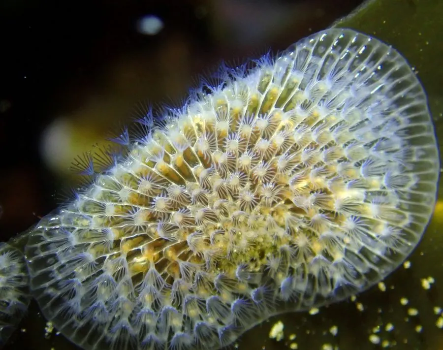

其他无脊椎动物 · 动物界
膜孔苔虫 Membranipora membranacea

群体呈白色薄网状的苔藓虫，附着在海藻叶片上，原产北太平洋，随海藻贸易入侵北大西洋，覆盖海带。
- 分类
- 门苔藓动物门纲裸唇纲目唇口目科膜孔苔虫科属膜孔苔虫属
- 栖息环境
- 海带、糖藻等大型海藻叶片表面与岩礁
- 地理分布
- 原产北太平洋，现入侵北大西洋沿岸
- 保护级别
- 入侵物种，无保护需求，需监测扩散
物种志
膜孔苔虫是群体苔藓虫，群体呈薄薄的白色网状片，由许多长方形小室排列成单层，边缘有细小的刺。群体附着在海藻叶片表面，大小可达数厘米，远看像一层白霜或细密的蕾丝，贴在海带和糖藻的叶面上，用手一摸有砂纸般的颗粒感。
它原产北太平洋，包括日本和北美西海岸，二十世纪随海藻和船体传播到北大西洋，如今在北美东岸和欧洲沿海大量繁殖。它以触手冠滤食浮游生物，繁殖快，能在海藻叶片上迅速覆盖大片面积，遮挡光照、增加阻力，导致海带折断，对海带林造成影响。它是典型的海藻污损生物，扩散与海藻养殖和航运密切相关，管理需监测海藻调运和船体附着。
形态与习性
- 群体形态白色薄网状片，单层小室排列
- 小室长方形，边缘有细刺
- 附着贴附于海带等大型海藻叶片
- 食性以触手冠滤食浮游生物
- 危害覆盖海藻，遮挡光照致海带折断
- 扩散随海藻调运与船体附着传播
趣味知识
- 它把海带叶片糊成一层白霜，远看还以为海带长了霉。
- 被它盖住的海带见不到光，又多了重量，风浪一来就容易断。
- 它从太平洋一路传到北大西洋，跟着海藻贸易搭了便车。